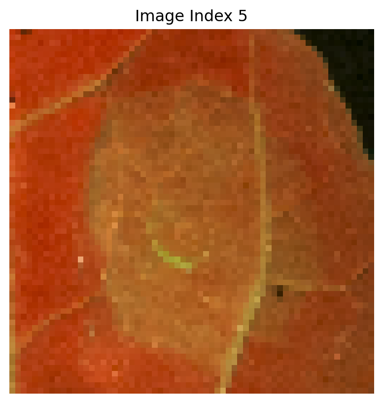

Investigate patterns of scoring amongst the different trained deep learning models
Hypotheses:
Some images will be poorly scored by all models.
Agreement between models will vary.
Poorly scored images will share a specific feature e.g. they may all come from the same project.
A consensus score from all the models will be no better than the best single model.
Rationales:
Human ground truth labelling is subjective. Models apply consistend rules when scoring, so if one disagrees with humans is it likely many or all disagree with humans.
Different training datasets and architectures may mean that some models learn more similar patterns than others.
Some types of images may be less common in the training data or more likely to be poorly scored by humans.
Models are more likely to agree with each other already - consensus scoring would perform better if different models performed better/worse on different parts of the dataset.
Experimental plan:
DONE
Load in all models from models/00_miscellaneous/best_models_of_each_type_11_25/
Load in labelled dataset from data/cropped_images/
Predict all models on all images. Since the training/val/test datasets were randomly selected, there shouldn’t be any images that are overrepresented in training/val/test, so it’s fine that some predictions will be on training data.
Rank images by least to best predicted (rank first by number of incorrect predictions, then by mean distance from correct score).
Visually inspect grid of 30 most poorly predicted images - do they share any patterns? Are there any images consistently scored >1 from ground truth - perhaps incorrectly labelled by humans?
NEXT
How often do models agree with one another? Can models be clustered by their scoring agreements? How can I visualise this? Do similarities in model scoring correlate with any feature e.g. training dataset or architecture type?
Does human scoring variability correlate with model scoring variability? Maybe some images are just more challenging to score consistently. Does human scoring agreement correlate with model prediction accuracy?
How do model prediction accuracies differ by a) score (we sort of already know but only for individual models) b) project c) dataset type d) architecture type e) size of cell death area (from bounding box size)
Generate a model consensus using the median score. Does this perform better or worse than the best individual model? Talk to love about how he built his ensemble models.
Libraries
from pathlib import Pathimport sysrepo_root =next(p for p in Path.cwd().parents if (p /'.git').exists())sys.path.append(str(repo_root /'src'))import base_datasetimport osimport tensorflow as tffrom tensorflow.keras import layersimport numpy as npimport pandas as pdimport matplotlib.pyplot as pltimport reimport seaborn as sns
2025-12-01 14:38:17.343701: I tensorflow/core/platform/cpu_feature_guard.cc:210] This TensorFlow binary is optimized to use available CPU instructions in performance-critical operations.
To enable the following instructions: AVX2 FMA, in other operations, rebuild TensorFlow with the appropriate compiler flags.
Load models
Have to redefine the VisionTransformer class to load in the models correctly
@tf.keras.utils.register_keras_serializable()class VisionTransformer(tf.keras.Model):def__init__(self, patch_size=4, projection_dim=128, num_heads=4, num_classes=7, **kwargs):super(VisionTransformer, self).__init__(**kwargs)self.patch_size = patch_sizeself.projection_dim = projection_dimself.num_classes = num_classesself.num_heads = num_headsself.patch_projection = layers.Dense(projection_dim)self.position_embedding =Noneself.transformer_layers = [ layers.MultiHeadAttention(num_heads=num_heads, key_dim=projection_dim), layers.Dense(projection_dim, activation='relu'), layers.Dense(projection_dim) ]self.mlp_head = tf.keras.Sequential([ layers.Dense(128, activation='relu'), layers.Dense(num_classes) ])def get_config(self): config =super(VisionTransformer, self).get_config() config.update({"patch_size": self.patch_size,"projection_dim": self.projection_dim,"num_heads": self.num_heads,"num_classes": self.num_classes, })return config@classmethoddef from_config(cls, config):return cls(**config)def build(self, input_shape): height, width = input_shape[1], input_shape[2]self.num_patches = (height //self.patch_size) * (width //self.patch_size)self.cls_token = tf.Variable(tf.zeros([1, 1, self.projection_dim]), trainable=True)self.position_embedding = layers.Embedding(input_dim=self.num_patches +1, output_dim=self.projection_dim)super(VisionTransformer, self).build(input_shape)def call(self, x): batch_size = tf.shape(x)[0] patches = tf.image.extract_patches( images=x, sizes=[1, self.patch_size, self.patch_size, 1], strides=[1, self.patch_size, self.patch_size, 1], rates=[1, 1, 1, 1], padding='VALID' ) patches = tf.reshape(patches, [batch_size, -1, self.patch_size *self.patch_size *3]) x =self.patch_projection(patches) cls_token = tf.tile(self.cls_token, [batch_size, 1, 1]) x = tf.concat([cls_token, x], axis=1) positions = tf.range(start=0, limit=self.num_patches +1, delta=1) x +=self.position_embedding(positions)for mha, ffw inzip(self.transformer_layers[::2], self.transformer_layers[1::2]): x = mha(x, x) + x x = ffw(x) + xreturnself.mlp_head(x[:, 0])def load_models_from_directory(base_path, vit_params_map=None):""" Load models from directory. CNNs are loaded normally. ViTs are loaded with specified parameters one at a time. Parameters: ----------- base_path : str Path to the directory containing model folders vit_params_map : dict Dictionary mapping ViT model identifiers to their parameters. Format: {identifier: (patch_size, projection_dim, num_heads, image_side_length)} """if vit_params_map isNone: vit_params_map = {} models = {} custom_objects = {'VisionTransformer': VisionTransformer}ifnot os.path.exists(base_path):print(f"Path not found: {base_path}")return modelsfor folder_name insorted(os.listdir(base_path)): folder_path = os.path.join(base_path, folder_name)ifnot os.path.isdir(folder_path): continue model_file =Noneforfilein os.listdir(folder_path):iffile.endswith(('.keras', '.h5')): model_file = os.path.join(folder_path, file)breakifnot model_file:continueprint(f"Loading {folder_name}...")# Check if this is a known ViT model is_vit =Falsefor identifier, params in vit_params_map.items():if identifier in folder_name: is_vit =True patch_size, projection_dim, num_heads, image_side_length = paramsprint(f" ViT model detected: patch_size={patch_size}, projection_dim={projection_dim}, num_heads={num_heads}")try:# Create a ViT instance with the correct parameters model = VisionTransformer( patch_size=patch_size, projection_dim=projection_dim, num_heads=num_heads, num_classes=7 )# Build with dummy input at correct size dummy_input = np.zeros((1, image_side_length, image_side_length, 3), dtype=np.float32) model(dummy_input, training=False)# Load the weights from the saved file model.load_weights(model_file) models[folder_name] = modelprint(f" -> Success")exceptExceptionas e:print(f" Failed: {e}")break# If not a ViT, load as CNNifnot is_vit:try: model = tf.keras.models.load_model( model_file, custom_objects=custom_objects,compile=False ) models[folder_name] = modelprint(f" -> Success (CNN)")exceptExceptionas e:print(f" Failed: {e}")return modelsdef verify_models(models):""" Iterates through a dictionary of loaded models and prints their configuration. Works with both CNNs and Vision Transformers. """print(f"\n{'Model Name':<35} | {'Type':<5} | {'Patch':<5} | {'Proj':<5} | {'Heads':<5} | {'Params':<12}")print("-"*100)for name, model in models.items(): model_type ="ViT"ifhasattr(model, 'patch_size') else"CNN" patch =getattr(model, 'patch_size', 'N/A') proj =getattr(model, 'projection_dim', 'N/A') heads =getattr(model, 'num_heads', 'N/A') params = model.count_params()print(f"{name:<35} | {model_type:<5} | {str(patch):<5} | {str(proj):<5} | {str(heads):<5} | {params:<12,}")path ="/Users/jowillia/Documents/GitHub/AutoCDAScorer_Models/models/00_Miscellaneous/best_models_of_each_type_11_25/"# Known ViT model parameters: (patch_size, projection_dim, num_heads, image_side_length)vit_params_map = {'Tran_Base': (4, 128, 4, 64),'Tran_Geom_700': (4, 32, 8, 64),'Tran_Composite_7000': (4, 32, 4, 64),'Tran_CGAN_A': (32, 64, 8, 64),}loaded_models = load_models_from_directory(path, vit_params_map)print(f"\nSuccessfully loaded {len(loaded_models)} models.")verify_models(loaded_models)
Loading 567_924_Tran_CGAN_A...
ViT model detected: patch_size=32, projection_dim=64, num_heads=8
-> Success
Loading 574_938_CNN_Confident...
/Users/jowillia/miniforge3/envs/tensorflow_env/lib/python3.11/site-packages/keras/src/layers/convolutional/base_conv.py:107: UserWarning:
Do not pass an `input_shape`/`input_dim` argument to a layer. When using Sequential models, prefer using an `Input(shape)` object as the first layer in the model instead.
-> Success (CNN)
Loading 600_933_CNN_CGAN_A...
-> Success (CNN)
Loading 611_974_Tran_Base...
ViT model detected: patch_size=4, projection_dim=128, num_heads=4
-> Success
Loading 617_961_CNN_Geom_700...
-> Success (CNN)
Loading 621_969_CNN_Base...
-> Success (CNN)
Loading 640_950_Tran_Composite_7000...
ViT model detected: patch_size=4, projection_dim=32, num_heads=4
-> Success
Loading 653_968_CNN_Composite_7000...
plt.imshow(images[0][:,:,::-1])plt.title("Image Index 5")plt.axis('off')plt.show()print(labels[0])print(filenames[0])

0
DSC_7584_2_3_5.tif
Predict on all images with all models
if os.path.exists("./model_predictions.csv"): results_df = pd.read_csv("./model_predictions.csv", index_col=0)else: all_predictions = {}print(f"Starting predictions on {len(images)} images for {len(loaded_models)} models...")for model_name, model in loaded_models.items():print(f"Predicting with {model_name}...")try: preds = model.predict(images, batch_size=32, verbose=0) predicted_classes = np.argmax(preds, axis=1) all_predictions[model_name] = predicted_classesexceptExceptionas e:print(f"Error predicting with {model_name}: {e}") results_df = pd.DataFrame(all_predictions) results_df.index = filenames ground_truth_map =dict(zip(filenames, labels)) results_df['human_score'] = results_df.index.map(ground_truth_map) results_df.to_csv('./model_predictions.csv')
Rank by worst to best images
model_cols = [c for c in results_df.columns if c !='human_score']# a) Percentage Agreement: Mean of (Model_Prediction == Human_Score) across rowresults_df['agreement_pct'] = results_df[model_cols].eq(results_df['human_score'], axis=0).mean(axis=1)# b) Average Distance: Mean of |Model_Prediction - Human_Score| across rowresults_df['avg_distance'] = results_df[model_cols].sub(results_df['human_score'], axis=0).abs().mean(axis=1)# Rank: 1. Lowest agreement (Ascending), 2. Greatest distance (Descending)results_df = results_df.sort_values(by=['agreement_pct', 'avg_distance'], ascending=[True, False])print(results_df[['human_score', 'agreement_pct', 'avg_distance']].head())print(results_df.head(20))# Saveresults_df.to_csv('./ranked_model_predictions.csv')print("Saved ranked predictions to ./ranked_model_predictions.csv")iflen(loaded_models) >0: test_model =list(loaded_models.keys())[0] agreement = (results_df[test_model] == results_df['human_score']).mean()print(f"\nSanity Check ({test_model}): {agreement:.2%} agreement")
Add experiment column using scoring allocation data
# Define the base directory for file pathsBASE_DIR ="/Users/jowillia/Documents/GitHub/AutoCDAScorer_Models/analyses/01_generate_raw_data/01_Allocation_info/"def get_path(filename):return os.path.join(BASE_DIR, filename)# Load filesallocation_data_1 = pd.read_csv(get_path("randomised_info.csv"))count_data_1 = pd.read_csv(get_path("image_info.csv"))allocation_data_2 = pd.read_csv(get_path("randomised_info_2.csv"))count_data_2 = pd.read_csv(get_path("image_info_2.csv"))# Function to add the required columns, based on the Quarto file logicdef add_new_columns(allocation_data, count_data):# Path Cleaning (R: gsub("^/Volumes/.../", "", allocation_data$Path)) allocation_data['Path'] = allocation_data['Path'].str.replace(r'^/Volumes/shared/Research-Groups/Mark-Banfield/Josh_Williams/', '', regex=True )# Merge Data to get CDA_Per_Leaf merged_data = pd.merge( allocation_data, count_data[['Image', 'CDA_Per_Leaf']], left_on='basename', right_on='Image', how='left' ) allocation_data['CDA_Per_Leaf'] = merged_data['CDA_Per_Leaf']# Add Folder column (R: sub("/.*", "", allocation_data$Path)) allocation_data['Folder'] = allocation_data['Path'].str.replace(r'\/.*', '', regex=True)# Add Chimaera column (R: ifelse(allocation_data$Folder %in% c("Fig2_leaf_images", "Piik (DeltaHMA)"), 1, 0)) CHIMAERA_FOLDERS = ["Fig2_leaf_images", "Piik (DeltaHMA)"] allocation_data['Chimaera'] = allocation_data['Folder'].apply(lambda x: 1if x in CHIMAERA_FOLDERS else0 )return allocation_data# Apply the function to both parts and combineallocation_data_1 = add_new_columns(allocation_data_1, count_data_1)allocation_data_2 = add_new_columns(allocation_data_2, count_data_2)allocation_data_combined = pd.concat([allocation_data_1, allocation_data_2], ignore_index=True)def extract_stem(filename):# This regex captures everything before the last 3 underscore-separated numbers and extension match = re.match(r"(.*)_\d+_\d+_\d+\.tif", filename, re.IGNORECASE)if match:return match.group(1)return filename # Fallback if pattern doesn't match# 1. Create the new 'basename' column in results_df (containing the stem)results_df['basename'] = results_df.index.to_series().apply(extract_stem)# 2. Prepare allocation_data_combined for matching# We strip extensions (like .TIF or .tif) to ensure we match only the name partallocation_stems = allocation_data_combined['basename'].apply(lambda x: str(x).rsplit('.', 1)[0])# 3. Check for matches# Create a boolean column indicating if the basename exists in the allocation dataresults_df['is_valid_basename'] = results_df['basename'].isin(allocation_stems)# View the resultsprint(results_df[['basename', 'is_valid_basename']].head())# Check how many matched foundprint(f"Total matches found: {results_df['is_valid_basename'].sum()}")# 4. Add the 'experiment' column# Create a dictionary mapping the filename stems to the Folder nameexperiment_mapper =dict(zip(allocation_stems, allocation_data_combined['Folder']))# Map the values to the new columnresults_df['experiment'] = results_df['basename'].map(experiment_mapper)print(results_df[['basename', 'experiment']].head())print(results_df.head())print(results_df['experiment'].isna().sum())
Add score variability column and raw image size column using raw data
# 1. Load the datapath ="/Users/jowillia/Documents/GitHub/AutoCDAScorer_Models/analyses/01_generate_raw_data/04_Median_and_Centre_Coords/combined_CDA_data_median.csv"combined_df = pd.read_csv(path)# 2. Add 'img_name'combined_df['img_name'] = combined_df.apply(lambda x: f"{str(x['Basename']).replace('.TIF', '').replace('.tif', '')}_{x['Row']}_{x['Col']}_{x['Pos']}.tif", axis=1)# 3. Add 'score_variability'combined_df['score_variability'] = combined_df[['Score1', 'Score2', 'Score3']].std(axis=1)# 4. Add 'bounding_box_size' based on Centre_Coords scorerdef get_size(row): idx =int(row['Centre_Coords'])returnabs(row[f'X1_{idx}'] - row[f'X2_{idx}'])combined_df['bounding_box_size'] = combined_df.apply(get_size, axis=1)# 5. Rename results_df column and Compare# Check if 'img_name' is already a column, if not reset indexif'img_name'notin results_df.columns: results_df = results_df.rename_axis("img_name").reset_index()# Check overlapmatches = combined_df['img_name'].isin(results_df['img_name']).sum()print(f"Number of matching images: {matches} out of {len(combined_df)}")# 6. Merge the new columns into results_df# We select only the relevant columns from combined_df to avoid duplicationresults_df = results_df.merge( combined_df[['img_name', 'score_variability', 'bounding_box_size']], on='img_name', how='left')# 7. Print headprint(results_df.head())
# 1. Determine the size of the smallest 'human_score' classmin_count = results_df['human_score'].value_counts().min()# 2. Group by 'human_score' and randomly sample 'min_count' rows from each group# We use a random_state for reproducibilityresults_df_scoreclass_normalised = results_df.groupby('human_score').sample(n=min_count, random_state=42)# 3. Verify the counts are now equalprint("Counts per score class after normalization:")print(results_df_scoreclass_normalised['human_score'].value_counts())# Optional: Check the shape of the new dataframeprint(f"\nNew dataframe shape: {results_df_scoreclass_normalised.shape}")results_df_scoreclass_normalised.to_csv("results_normalised.csv", index=False)
Counts per score class after normalization:
human_score
0 436
1 436
2 436
3 436
4 436
5 436
6 436
Name: count, dtype: int64
New dataframe shape: (3052, 18)